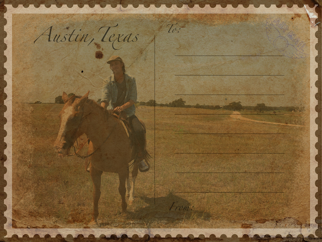

In my first semester at BCIT I took a photoshop class that I really enjoyed and learned a lot from. The picture below is an example of one of my early assignements using layers and double exposure.
For this project we were challenged to design a "old-style" postcard. We were given a lot of creative freedom for this assignment, so I chose to make a postcard from a picture of a recent trip to Texas and a very rare occasion of me on a horse. Overall, I'm happy with how it turned out and learned a lot about how to design based on a specfic area of print in this project.
In this project we were challenged to make a short video utilizing the skills we had learned throughout the semester in Visual Effects. I used a combination of Adobe Illustrator and Adobe After Effects to create this scene. Since we had been creating fun, cartoon like animations for the majority of the semester I challenged myself to try to create something a little more realistic. The galaxy at the end of the video was above my skill level when I started this project but through carefully planning and great teaching I was able to exceed my goal of creating a semi-realistic scene.
In this assigment I made a short video showcasing the skills I learned in Adobe After Effects using text layers. I included a variety of different approaches to reach the final result of my video. The audio from the video is a short-clip from an old movie, I had a lot of creating this video.
Learning HTML/CSS has been an important and enjoyable element of the D3 program. I've had plenty of practice over the past year and feel confident in my skill level with these markup languages. The greatest example of my skill in HTML/CSS is actually this webpage you are looking at. Below are other descriptions of projects and assignment that I have enjoyed.
We have just recently been introduced to Javascript and I feel as if I am picking it up fairly quickly. Learning a programming language for the first time is definitley challenging but the break-throughs and opportunites Javascript offers has been a really exciting addition to my Web Dev toolbelt. I hope to further improve my Javascript skills in the next year and be able to use it as often as possible.
I also completed a midterm project using Wordpress in one of my classes. The topic for this assignment was my decision, so I chose to share my interest for the variety of podcasts I currently am enjoying. Learning Wordpress has been a really fun and xciting addition to my second semester at BCIT. I am currently working on another wordpress assignment and I am enjoying using the interface.
In my first semester at BCIT I was enrolled in a class called System Admin which main focus was teaching us how to use GitHub via the command line. At the time I struggled to see the purpose of GitHub but since diving deeper into development I have come to appreciate and even love what Github has to offer.